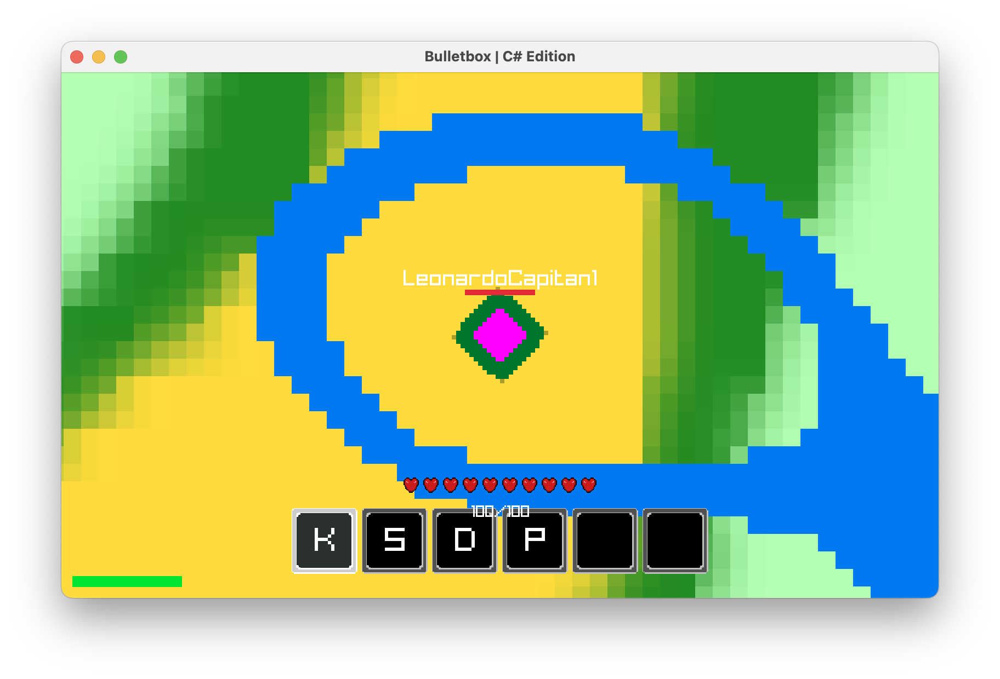

World Generation & Biome Blending Update
< Back to Patch Notes
Bulletbox 26.1.1-01h
Alpha Unreleased
Biome Expansion & Distribution Rework
- Reduced Forest Dominance: Reworked biome distribution logic to better account for the Gaussian distribution of Perlin noise, reducing the overwhelming prevalence of Forest regions. (26.1.1-01h.1/1)
- Expanded Rare Biome Thresholds: Narrowed center-range biome thresholds while expanding extreme-value ranges, significantly increasing the appearance rate of uncommon terrain types. (26.1.1-01h.1/2)
- Ocean Biome Generation: Added ultra low-frequency ocean noise generation (
0.003f) to create massive contiguous oceans spanning large portions of the world. (26.1.1-01h.1/3) - Beach Biome Integration: Implemented Beach generation around ocean borders to create smoother coastline transitions between land and water. (26.1.1-01h.1/4)
- Desert Biome Rebalancing: Desert biomes now share equal land-mass generation priority with Forest and Meadow regions. (26.1.1-01h.1/5)
- Extreme Terrain Biomes: Added rare high-contrast biome regions including Stony Peaks and Brimstone Springs generated from extreme noise thresholds. (26.1.1-01h.1/6)
- Procedural River System: Implemented Ridge Noise-based river generation using absolute-value noise sampling to produce narrow winding river paths across terrain. (26.1.1-01h.1/7)
- Biome Priority Rules: Rivers now override standard land biomes while Oceans and Beaches override river generation where overlap occurs. (26.1.1-01h.1/8)
Smooth Chunk Blending System
- Client-Side Biome Blending: Implemented a custom solid-tile chunk blending system to eliminate harsh biome borders without introducing GPU-heavy blur or gradient effects. (26.1.1-01h.2/1)
- Weighted Neighbor Sampling: Chunks now calculate their blended color values by sampling neighboring chunks within a 3-chunk radius using weighted proximity calculations. (26.1.1-01h.2/2)
- Immediate Neighbor Prioritization: Radius 1 neighboring chunks now contribute with a
0.85blend weight for stronger local terrain continuity. (26.1.1-01h.2/3) - Extended Radius Smoothing: Radius 2 and Radius 3 neighbors now contribute with reduced
0.25and0.05weights respectively for subtle large-scale smoothing. (26.1.1-01h.2/4) - River Blend Exclusion: Rivers are now ignored entirely during neighboring chunk blending calculations to preserve crisp and clearly defined water paths. (26.1.1-01h.2/5)
- Brimstone Visual Overlay: Added a semi-transparent orange overlay tint applied above base chunk colors within Brimstone biome regions. (26.1.1-01h.2/6)
Performance & Optimization Improvements
- Amortized Blend Processing: Introduced a
_pendingBlendsprocessing queue to distribute expensive blend calculations across multiple frames instead of processing all chunks simultaneously. (26.1.1-01h.3/1) - Per-Frame Blend Limits: The renderer now processes a maximum of
500chunk blend calculations per frame to maintain stable framerates during world traversal. (26.1.1-01h.3/2) - Distance-Based Queue Prioritization: Pending blend calculations are now sorted by player proximity, ensuring chunks closest to the player visually update first. (26.1.1-01h.3/3)
- Blended Color Cache: Added
_blendedColorCachestorage to prevent redundant recalculations for unchanged chunks. (26.1.1-01h.3/4) - Selective Recalculation Logic: Blend calculations now only re-run when neighboring chunk data changes or during scheduled refresh cycles. (26.1.1-01h.3/5)
- Viewport Frustum Culling: The
Drawpipeline now calculates visible world-space screen bounds and skips rendering chunks outside the viewport to reduce GPU load and prevent rendering hangs. (26.1.1-01h.3/6) - Move-Triggered Chunk Updates: Chunk loading, unloading, and cache cleanup systems now only execute when crossing chunk boundaries rather than every frame. (26.1.1-01h.3/7)
Reliability & Synchronization Systems
- Automatic Cache Invalidation: Newly received chunk data now automatically triggers blend recalculations for all chunks within a 3-tile radius to maintain seamless biome transitions. (26.1.1-01h.4/1)
- Heartbeat Blend Refresh: Added a 5-second heartbeat refresh system which re-queues all currently loaded chunks for blending correction and synchronization. (26.1.1-01h.4/2)
- Stuck Tile Recovery: Heartbeat refresh logic now resolves permanently unblended or visually stale chunks caused by delayed network packets or incomplete neighbor generation during initial world loading. (26.1.1-01h.4/3)
Development Preview: Biome Blending
BEFORE

AFTER
